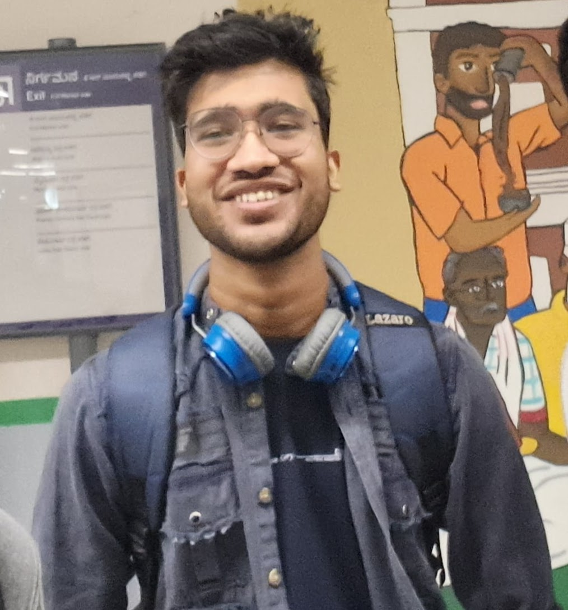

I am Ritik Kumar, and I am a 5th-year BS-MS student in Physics supervised by Prof. Nirmal Raj at the Indian Institute of Science, Bengaluru. My main research focus on using spectral, timing and polarization to study Central region of Active Galactic Nuclei. Alongside this, I also work on machine learning and statistical methods with real data, including time-series reconstruction and probabilistic modelling, I develop the models to model the signal and reduce the noise, I do use computational and statistical methods to understand complex signals and extract useful information from data.
I am also interested in quantitative methods, statistical inference, optimization, and data-driven problem solving. I am currently working with Prof. C. S. Stalin at the Indian Institute of Astrophysics (IIA), Prof. Maria Giovanna Dainotti at the National Astronomical Observatory of Japan (NAOJ), and Dr. Thomas Dauser and Prof. Jörn Wilms at ECAP, Friedrich-Alexander-Universität Erlangen-Nürnberg (FAU), Germany. Through these collaborations, I work on X-ray studies of active galactic nuclei, machine learning for astrophysical data analysis, and X-ray spectral and relativistic modelling.
I study the hot X-ray-emitting coronae surrounding supermassive black holes using X-ray spectroscopy, with a particular focus on their temperature, spectral properties, and connection to the accretion disk.
Read more →I investigate outflows from active galactic nuclei across different gas phases using XMM-Newton observations, including the study of ultra-fast outflows, multiple velocity components, and kinetics of the outflows.
Read more →I work on development of statistical and machine-learning methods for reconstructing missing segments in time-series data, using Gaussian processes, neural networks, and physics-informed models for probabilistic inference and uncertainty-aware prediction.
Read more →I am investigating the geometry and physical properties of AGN corona using X-ray polarization and relativistic reflection modelling, combining IXPE, XMM-Newton, and NuSTAR observations.
Read more →I am interested in research collaborations and discussions in high-energy astrophysics, Machine Learning, Quantitative research and related work areas.